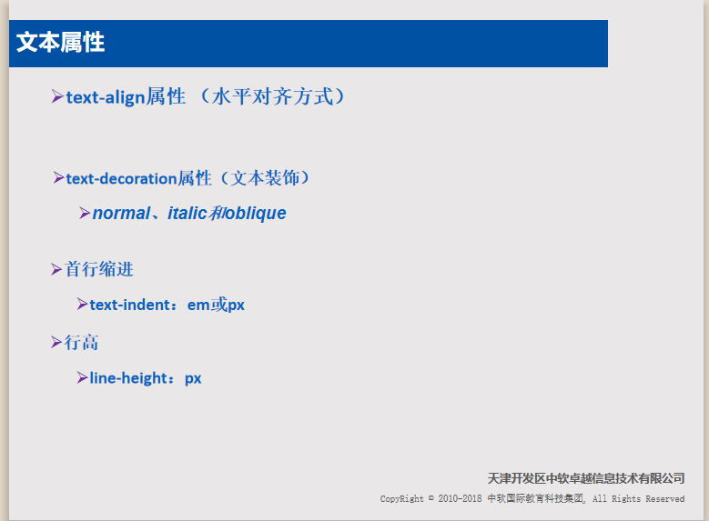

综合美联社及意大利安莎通讯社报道，船员们原计划带着他们救出的这群移民前往利比亚，但移民们却在离利比亚海岸仅6英里（约9.5千米）的地方控制了这艘船。事发后，意大利内政部长萨尔维尼确认这艘被劫持的船是土耳其油轮“El Hiblu1号”。他将目前发生的情况描述为“公海上发生的第一起海盗行为”。作为反移民政党“北方联盟”领袖的萨尔维尼在接受记者采访时讽刺道：“那些可怜的漂流者，劫持救起他们的商船，只因他们想决定商船的去向。”
截至目前还没有有关“El Hiblu1号”上船员状况的消息。且在该船仍在海上航行期间，也暂时无法获得或难以证实有关此次劫持事件的其他信息。但根据该船现在的航行路线，这艘船将有可能驶往意大利的兰佩杜萨岛或岛国马耳他。然而这两国政府都誓言不会让这艘油轮进入它们的领海。
马耳他武装部队表示，当地时间27日晚间早些时候，在这艘油轮仍在利比亚领海内的时候，该国军事武装人员已经做好准备随时待命。一名不愿透露姓名的马耳他军方官员告诉当地媒体，马耳他不会允许被劫持的油轮进入该国海域。与此同时，萨尔维尼也表示，虽然由于天气状况不太好，目前还不清楚这艘油轮最终会抵达马耳他还是意大利兰佩杜萨岛，但他要给“海盗”们传达一个信息:“别想靠近意大利。”
值得一提的是，此前不久，欧盟才决定取消在地中海针对难民船的海上巡逻，只继续在空中监察。因此这次的海上劫持事件也引起了各界的广泛关注，还有营运救援船及监察各国政府如何对待难民的私营团体，呼吁外界怜悯油轮上的难民，希望欧洲国家“以基本人权的名义采取行动，谨记我们处理的，是正在逃离地狱的人”。
